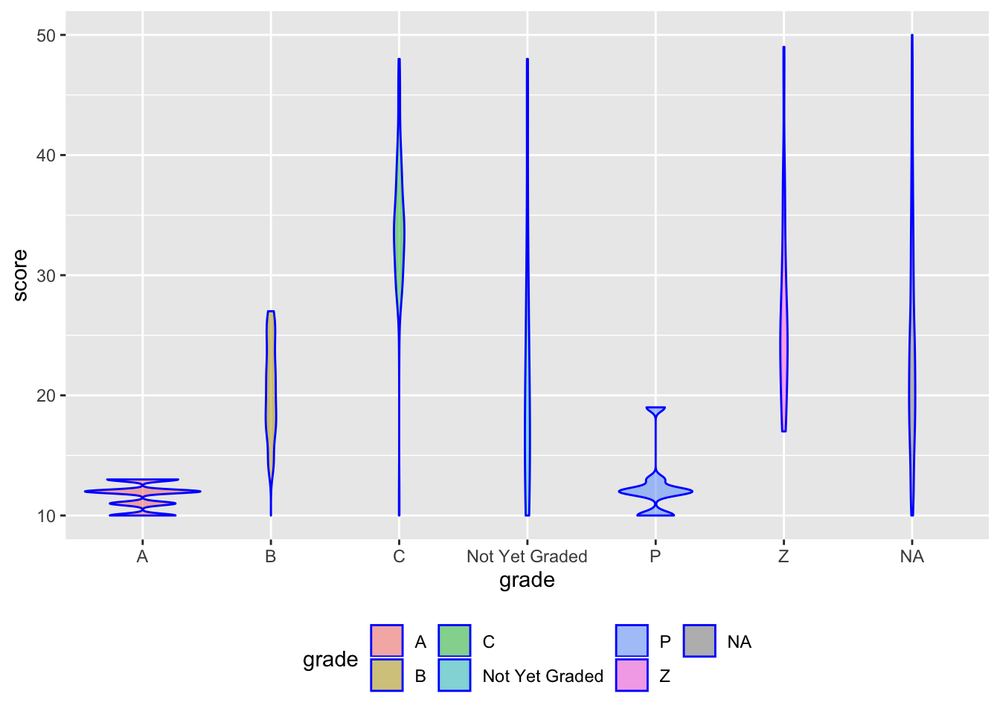

library(tidyverse)## ── Attaching packages ──────────────────────────────────────────────────────────────────────── tidyverse 1.2.1 ──## ✔ ggplot2 3.2.1 ✔ purrr 0.3.3
## ✔ tibble 2.1.3 ✔ dplyr 0.8.3
## ✔ tidyr 1.0.0 ✔ stringr 1.4.0
## ✔ readr 1.3.1 ✔ forcats 0.4.0## ── Conflicts ─────────────────────────────────────────────────────────────────────────── tidyverse_conflicts() ──
## ✖ dplyr::filter() masks stats::filter()
## ✖ dplyr::lag() masks stats::lag()library(viridis)## Loading required package: viridisLitelibrary(p8105.datasets)
library(dplyr)
library(plotly)##
## Attaching package: 'plotly'## The following object is masked from 'package:ggplot2':
##
## last_plot## The following object is masked from 'package:stats':
##
## filter## The following object is masked from 'package:graphics':
##
## layoutlibrary(yaml)data ("rest_inspec")set.seed(1)
data("rest_inspec")
rest_inspec =
rest_inspec %>%
select(
action, boro, critical_flag, cuisine_description, dba, score, grade) %>%
filter(
!is.na(score),
score %in% 10:50) %>%
sample_n(5000)##Plotly violin plot showing score distribution of different grade levels
rest_inspec %>%
mutate(name = forcats::fct_relevel(grade, c("A", "B", "C", "P", "Z"))) %>%
ggplot(aes(x = grade, y = score)) +
geom_violin(aes(fill = grade), color = "blue", alpha = .5) +
theme(legend.position = "bottom")
##Plotly boxplot showing distribution of scores among different cuisine descriptions
rest_inspec %>%
filter(
cuisine_description %in% c("Pizza", "Americans","Tapas","Polish","Chinese","Irish")) %>%
mutate(cuisine_description = fct_reorder(cuisine_description, score)) %>%
plot_ly(y = ~score, color = ~cuisine_description, type = "box",
colors = "Set2")##Plotly barchart showing distribution of grade A restaurants in all boroughs
rest_inspec %>%
filter (grade == "A") %>%
count(boro) %>%
mutate(boro = fct_reorder(boro, n)) %>%
plot_ly(x = ~boro, y = ~n, color = ~boro, type = "bar")